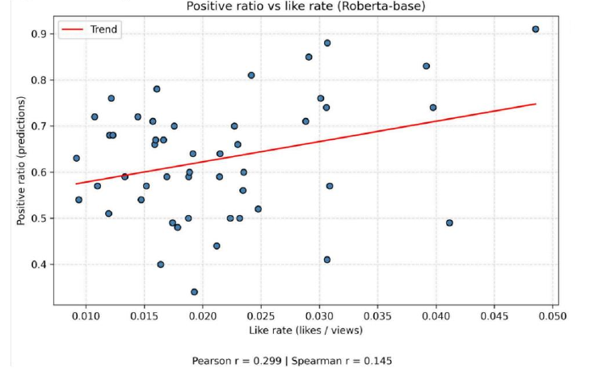

YouTube Comment Sentiment
A CS 6120 team project by Yanli Wang and Zheyu Deng.
We studied whether the sentiment of top-liked comments relates to a video's like rate (likes divided by views).
What we did
- Collected video statistics and comments, then labeled comments as positive, neutral, or negative.
- Compared a TF-IDF baseline with a RoBERTa sentiment model.
- Combined comment predictions for each video and compared them with its like rate.
My contribution and team roles
I built the TF-IDF and logistic regression baseline, worked on LLM-assisted and manual comment annotation, created baseline graphs, and compared results across channels. Zheyu Deng focused on data collection and cleaning and on fine-tuning the transformer models. We developed the annotation guidelines and interpreted the findings together.
Model comparison
TF-IDF + logistic regression uses word and character patterns, while RoBERTa also captures context. On the 50-video evaluation set, their Pearson correlations with like rate were about 0.16 and 0.30, respectively.
Results
We manually labeled 1,000 comments.
For 50 MrBeast videos, the RoBERTa-based positive comment ratio had a modest positive correlation with like rate (Pearson r ≈ 0.30).

Overall, top-liked comment sentiment carries a meaningful but limited signal; the correlation does not establish causation.